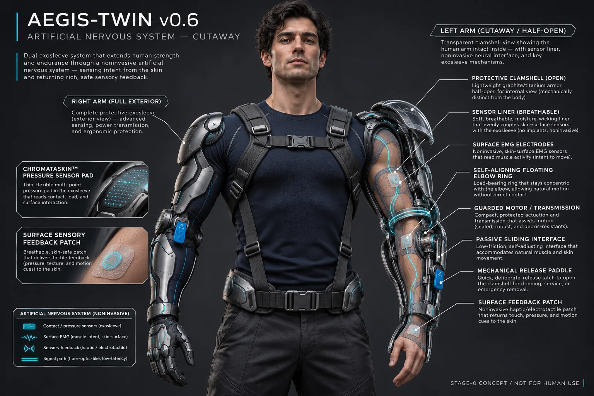

01 / AUGMENT
Slide-in protective exosleeves
For wearers with intact arms: a proposed hybrid of segmented exterior shells, soft sensor interfaces, self-aligning joints, bounded powered assistance, and independent mechanical release.
The arms are only half the story.
Imagine sliding your own arms into a synthetic exoskeleton intended to protect them, assist their movement, and respond to your intentions. Then give that machine an artificial nervous system.
Stage-0 design concept · Not for human use

For wearers with intact arms: a proposed hybrid of segmented exterior shells, soft sensor interfaces, self-aligning joints, bounded powered assistance, and independent mechanical release.
For people with missing or damaged limbs: a separate, individualized physical interface is envisioned. Future work would investigate pre-existing biological nerve–muscle pathways, including AMI-type connections of the kind Dave has discussed. No specific compatibility is established or promised.
A proposed CHROMATASKIN sensor layer would detect contact and slipping; joint sensors would track device position; noninvasive muscle and movement sensing would help infer wearer intent. Calibrated skin-level feedback is an early research route. Implanted nerve interfaces are a distinct, optional clinical research path—not a requirement for the standard slide-in system.

The current v0.6 package is a design brief and visual concept. No validated hardware, protective rating, strength measurement, natural sensory restoration, universal fit, or clinical result is claimed. The next proposed gates are CAD and digital anthropometric analysis, followed by instrumented tests on nonhuman phantoms with explicit failure criteria. Human studies would require independent professional and regulatory review.
Concept direction: Mr. Peloquin and Asteris Solenne. Technical challenge and review informed by the Synthetic Court, including Claude, Gemini, Grok and Meta AI. AI-assisted critique is not independent validation.